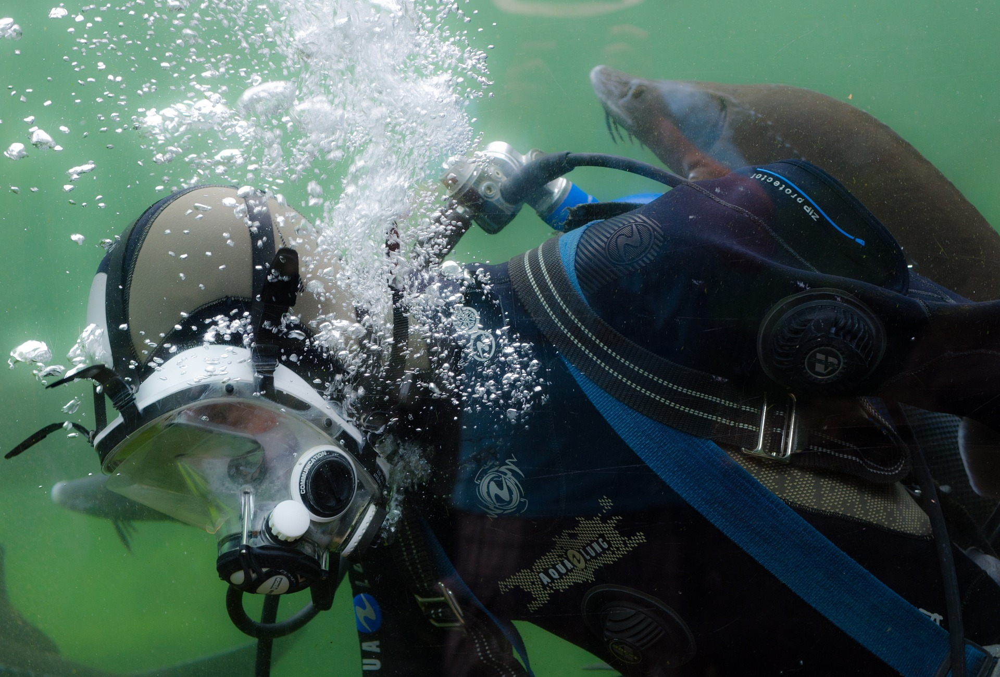

배리어리프 스노클링
그레이트 배리어 리프는 호주 북동부에 위치한 세계 최대의 산호초 지대이다. 호주 해안 지형에서 가장 두드러진 특색을 가지고 있는데 북쪽은 파퓨아 뉴기니의 플라이 강 어귀까지 남쪽은 퀸즐랜드주의 레이디 엘리엇까지 이어져있다. 산호초 대부분이 바다에 잠겨 있고 일부가 바다 위로 나와 방파제와 같은 외관을 형성한다. 세계 자유유산 지정. 보트로 그레이트 배리어 리프 장소들을 방문해 스노클 장비를 제공하고 수업이 함께 진행된다. 스노클링 뿐 아니라 스쿠버다이빙, 헬기투어, 물고기 먹이주기 관람 등의 다양한 상품을 즐길 수 있다. 정박기지시설에서 입수하는 방식으로 남녀노소에게 모두 안전하다.